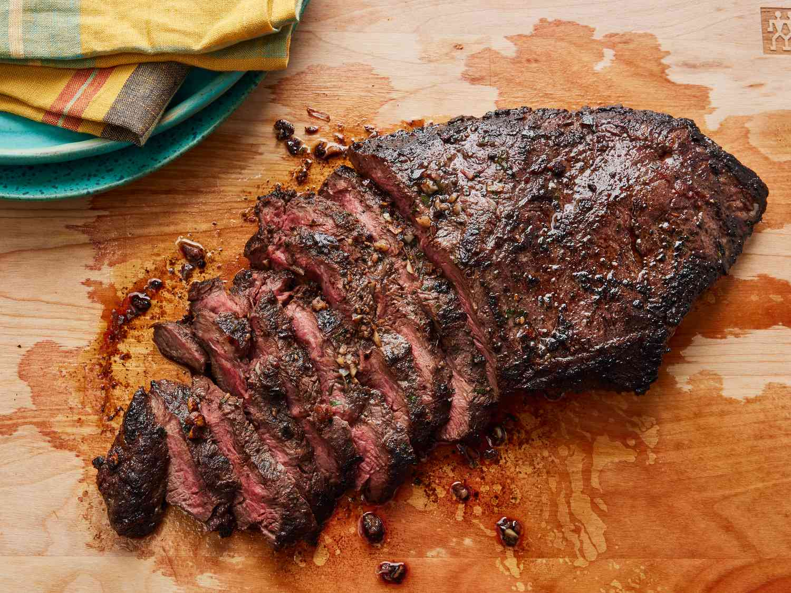

Flat Iron Steak

How to make perfect flat iron steak
This delicious flat iron steak recipe was created from a combination of different recipes that I read. I combined, adjusted, and finally perfected the marinade and cooking time to my taste. I'm sure you will love it as well. After all, it is perfection!
Ingredients
- 1 flat iron steak
- olive oil
- garlic cloves, minced
- seasonings
Steps
- Place steak inside a large resealable bag. Stir together olive oil, garlic, parsley, rosemary, chives, red wine, salt, pepper, and mustard powder in a small bowl.
- Pour marinade over steak in the bag. Press out as much air as you can and seal the bag. Marinate in the refrigerator for 2 to 3 hours.
- Heat a nonstick skillet over medium-high heat. Sear and cook the steak in the hot skillet for 3 to 4 minutes on each side for medium rare, or to your desired degree of doneness.
- Discard the marinade. Allow the steaks to rest for about 5 minutes before serving.